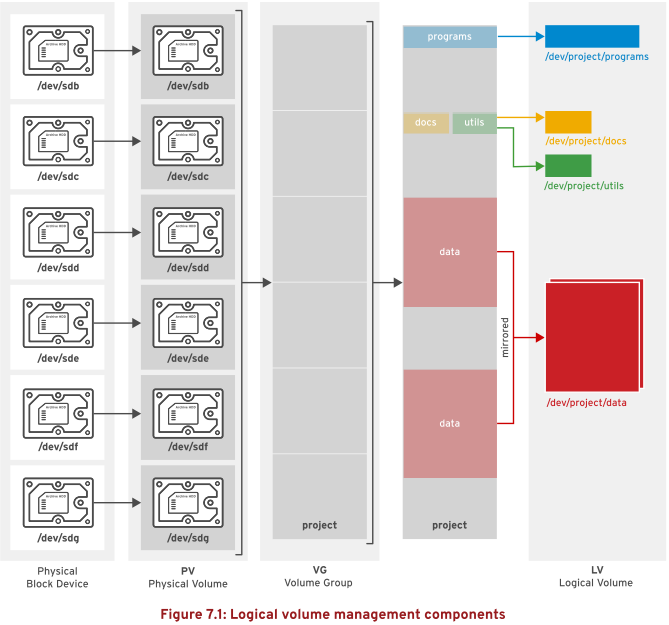

第七章 管理逻辑卷
目标：
- 使用命令行创建和管理含有文件系统和交换空间的逻辑卷。
章节：
- 创建逻辑卷
- 扩展逻辑卷
第一节：创建逻辑卷
目标：
- 完成本节后，学生应该能：
- 描述逻辑卷管理的组件和概念。
- 实施LVM存储。
- 显示LVM组件信息。
逻辑卷管理（LVM）概念：
- 逻辑卷有助于更加轻松地管理磁盘空间。
- 可以将卷组（volume group）中的可用空间分配给逻辑卷（logical volume），并且可以
调整文件系统的大小。
- 如果磁盘出现错误，可将替换磁盘注册为物理卷（physical volume）放入卷组中，并将逻辑卷
的区块迁移到新磁盘。
- LVM定义：
1. 物理设备：
a. 用于保存逻辑卷中所存储数据的存储设备。
b. 其为块设备，可以是磁盘分区、整个磁盘、RAID阵列或SAN磁盘。
2. 物理卷（PV）：
a. 物理设备必须初始化为物理卷。
b. LVM工具会将物理卷划分为物理区块（PE），充当物理卷上最小存储块。
3. 卷组（VG）：
a. 由一个或多个物理卷组成的存储池。
b. 一个物理卷只能分配给一个卷组。
c. 卷组可以包含未使用的空间和任意数目的逻辑卷。
4. 逻辑卷（LV）：
a. 根据卷组中的空闲物理区块创建。
b. 逻辑卷由逻辑区块（LE）组成，LE映射到PE。
实施LVM存储：
- 实施过程如下所示：
block device -> PV -> VG -> LV -> file system -> mount

创建逻辑卷：
- 准备物理设备：
1. 使用parted、gdisk或fdisk创建新分区，在LVM分区上，始终将分区类型设置为Linux LVM。
2. 对于MBR分区，使用 0x8e。
3. 如有必要，使用 partprobe 向内核注册新分区。
4. $ parted -s /dev/sdX set <partition_number> lvm on：设置磁盘分区类型为LVM

- 创建物理卷：
1. 使用 pvcreate 将分区标记为物理卷。
2. pvcreate命令会将物理卷分成若干固定大小的物理区块（PE），如 4MiB。
3. $ pvcreate /dev/sdXn：将磁盘（分区）创建为物理卷

- 创建卷组：
1. 使用 vgcreate 将一个或多个物理卷结合为一个卷组。
2. $ vgcreate <vg_name> <pv_name>：创建卷组

- 创建逻辑卷：
1. 使用 lvcreate 可根据卷组中的可用物理区块创建新的逻辑卷。
2. -n 选项：设置逻辑卷名称
-l 选项：设置逻辑区块（LE）数量
-L 选项：字节大小
3. $ vgs
# 查看卷组的空间使用情况
$ lvcreate -L <lv_size> <vg_name> -n <lv_name>
# 指定逻辑卷大小创建逻辑卷

4. 逻辑卷路径可表示为 /dev/vg_name/lv_name 或 /dev/mapper/vg_name-lv_name
- 添加文件系统：
使用 mkfs 在新逻辑卷上创建文件系统，创建挂载点，并挂载文件系统。

* 注意：文件系统类型错误导致系统启动失败
1. 由于系统无法正确挂载/etc/fstab中指定的卷，而进入救援模式（maintenance）。
2. 救援模式下不启用Linux网络栈！

3. 查看系统中已有的存储卷信息

4. 修改/etc/fstab中的相应条目，重启系统即可成功。

删除逻辑卷：
- umount并vim /etc/fstab取消文件系统挂载
- $ lvremove <lv_name>：删除不需要的逻辑卷
- $ vgremove <vg_name>：删除卷组
- $ pvremove <pv_name>：删除物理卷
查看LVM状态信息：
- $ pvdisplay <pv_name>：查看物理卷信息

- $ vgdisplay <vg_name>：查看卷组信息

- $ lvdisplay <lv_name>：查看逻辑卷信息


练习 P195：CREATING LOGICAL VOLUMES
第二节：扩展逻辑卷
目标：
- 完成本节后，学生应该能：
- 使用pvcreate和vgextend扩展VG，并使用vgdisplay验证结果。
- 使用pvmove和vgreduce缩减VG。
- 使用lvextend扩展LV。
- 通过xfs_growfs调整XFS文件系统的大小。
- 通过resize2fs调整ext4文件系统的大小。
扩展和缩减卷组：
- 可通过添加额外的物理卷来为卷组增加更多磁盘空间。
- 然后，可从额外的物理卷中为逻辑卷分配新的物理区块。
- 未使用的物理卷可以从卷组中删除。
- pvmove 命令可将数据从一个物理卷上的区块移动到卷组中其他物理卷上的区块。
- 通过这种方式，可以将新磁盘添加到现有卷组，将数据从较旧或较慢的磁盘移动到新磁盘，并
将旧磁盘从卷组中删除。
- 可在卷组中的逻辑卷正在使用时执行这些操作。
扩展卷组：
- 准备物理设备并创建物理卷

- 扩展卷组：$ vgextend <vg_name> <pv_name>

- 验证新空间是否可用

缩减卷组：
- 移动物理区块：
1. $ pvmove <pv_name>：将要删除的PV中的所有PE都重新放置到VG中的其他PV上
2. 其他VG中必须有足够数量的空闲区块来容纳这些移动内容。
3. 仅当VG中存在足够的空闲区块，且所有这些区块都来自其他PV时，才能执行此操作！
- 缩减卷组：$ vgreduce <vg_name> <pv_name>

* 注意：
1. 使用pvmove前，备份卷组中所有逻辑卷上存储的数据。
2. 如果操作期间意外断电，可能会导致卷组状态不一致。
3. 这可能导致卷组中逻辑卷上的数据丢失。
扩展逻辑卷：
- 逻辑卷的一个优势在于能够在不停机的情况下增加其大小。
- 可将卷组中的空闲物理区块添加到逻辑卷以扩展其容量，然后可使用逻辑卷扩展所包含的
文件系统。
- 使用vgdisplay验证卷组是否具有可用的空间。

- 使用 lvextend 命令扩展逻辑卷。

- 逻辑卷扩展常用示例：


扩展文件系统：XFS、ext3/4
- $ xfs_growfs <mount_point>
# 在线动态扩展XFS文件系统，在调整文件系统大小时，可以继续使用该文件系统。
- $ lvextend -r -L [+]<size> /dev/vg_name/lv_name
# 扩展逻辑卷容量，并在线动态扩展相应类型的文件系统。
- $ resize2fs /dev/vg_name/lv_name
# 在线动态扩展ext3/4文件系统，运行该命令时可挂载并使用该文件系统。
# -p 选项用于监控调整大小操作的进度
* 注意：
1. xfs_growfs与resize2fs之间的主要区别是为识别文件系统⽽传递的参数。
2. xfs_growfs采⽤挂载点，而resize2fs采用逻辑卷名称。
3. ext3/4文件系统支持逻辑卷收缩，XFS文件系统不支持逻辑卷收缩！
扩展逻辑卷和交换空间：
- 格式化为交换空间的逻辑卷也可以进⾏扩展，但该过程与扩展文件系统（如ext4或XFS）
的过程有所不同。
- 格式化为相应文件系统的逻辑卷可进行动态扩展，无需停机。
- 格式化为交换空间的逻辑卷则必须脱机才能进行扩展！
- 扩展SAWP空间：
$ swapoff -v /dev/vg_name/lv_name
# 停用逻辑卷上的交换空间
# 系统必须有足够的可⽤内存或交换空间，以便在停⽤逻辑卷上的交换空间时能接受
需要置入的任何内容！
$ lvextend -L +<size> /dev/vg_name/lv_name
# 扩展交换空间逻辑卷
$ mkswap /dev/vg_name/lv_name
# 重新格式化交换空间逻辑卷
$ swapon -av /dev/vg_name/lv_name
# 重新激活交换空间逻辑卷
练习 P205：EXTENDING LOGICAL VOLUMES
Lab P209：MANAGING LOGICAL VOLUMES